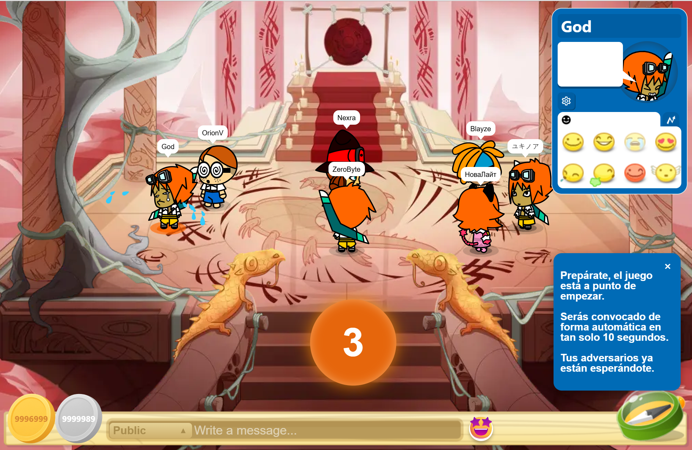
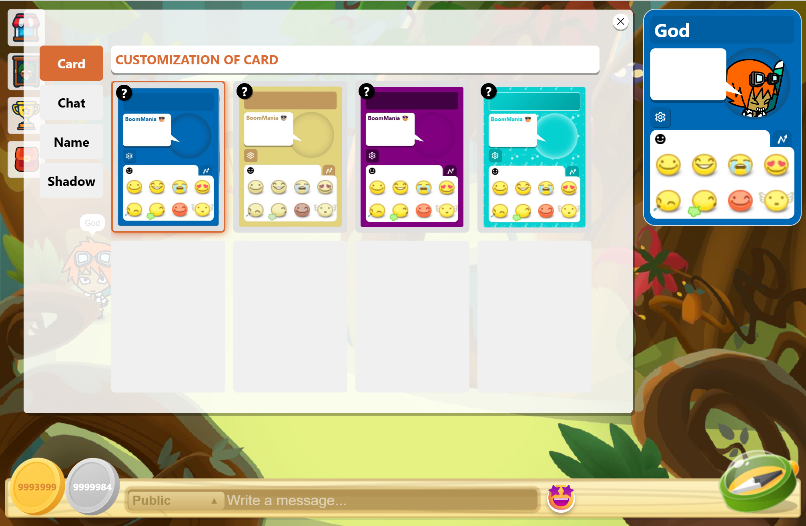

Galería pública de imágenes del proyecto
Nueve capturas del cliente HTML5 disponibles en una galería con filtros. Son imágenes de referencia y no representan jugadores conectados.
Ver más →Hitos documentados en el repositorio, distintos de las imágenes y tarjetas ilustrativas del juego. No son noticias de BoomBang.tv ni eventos de un servidor online.
7 hitos documentados
Nueve capturas del cliente HTML5 disponibles en una galería con filtros. Son imágenes de referencia y no representan jugadores conectados.
Ver más →Buscador de secciones y tareas, mejoras para teclado, menú responsive y enlaces internos verificados.
Ver más →El sitio informativo cuenta con una portada propia y una hoja de ruta visible. La API y el juego multijugador siguen sin servicio público.
Ver más →Restablecimiento por correo de un solo uso y validación de enlaces caducados.
Ver más →12 pruebas y 57 aserciones aprobadas en Laravel + MariaDB para la rama de desarrollo.
Ver más →Foro, chat, amistades, clanes, moderación, catálogo, ranking y contador de jugadores.
Ver más →Issue #2 creada para dar seguimiento desde el teléfono y esta página de avances.
Ver más →Transparencia: las fechas corresponden al registro de avances del proyecto. Revisa las pruebas y los commits en GitHub para conocer el estado actual.
Tarjetas ilustrativas del mundo y del cliente HTML5; no representan noticias en vivo.
La nueva navegación reúne noticias, comunidad y una guía de acceso sin depender del sitio de terceros.
Conoce la comunidad →
El repositorio documenta un minijuego multijugador con partidas, puntuaciones y recompensas. Aún requiere servicios configurados.
Cómo ejecutarlo →
La base del juego incluye personalización visual, avatares y perfiles que forman parte de la experiencia social.
Explorar características →
Los listados de usuarios y salas se mantienen sin cifras ficticias hasta conectar una API verificada.
Revisar estado →Las noticias dinámicas se habilitarán al desplegar Laravel. Estas entradas son ejemplos editoriales y no datos en vivo.
Ver avances comprobados ↗Los próximos anuncios se publicarán aquí cuando exista un proceso real de actualización del portal.
Volver al inicio